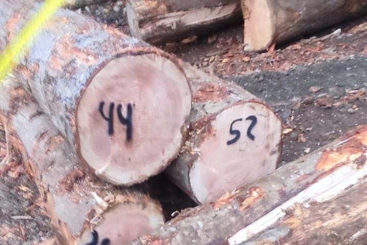
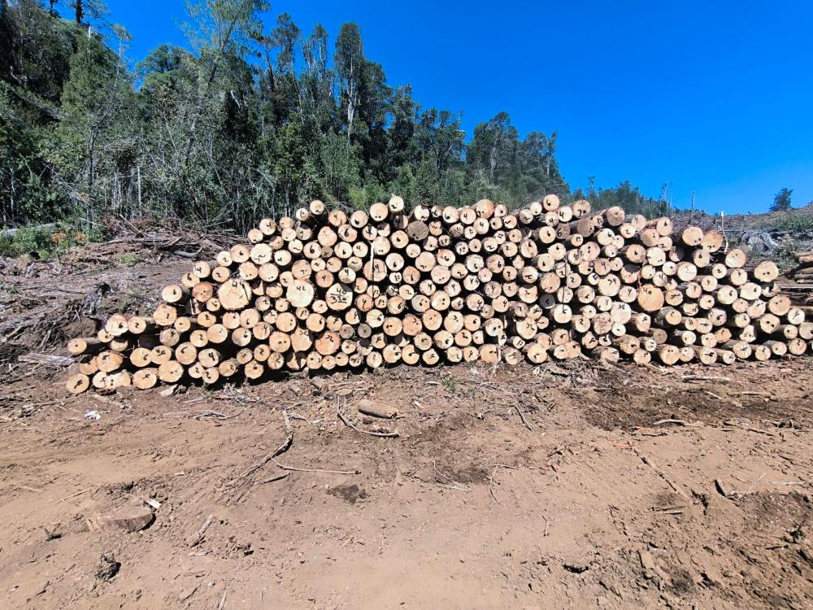
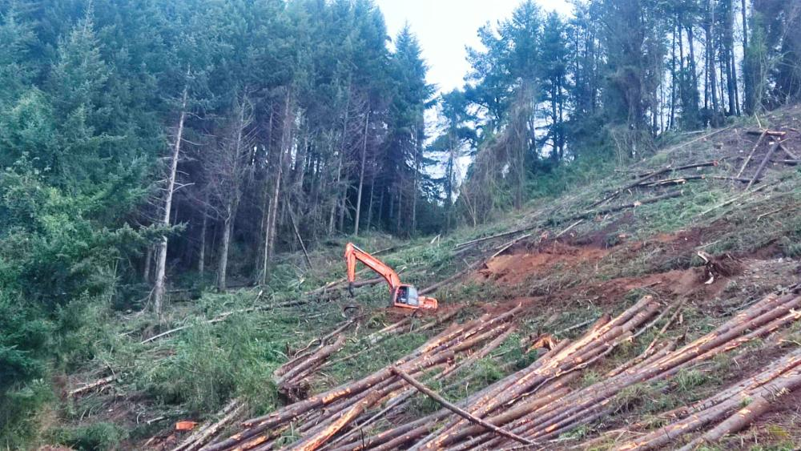
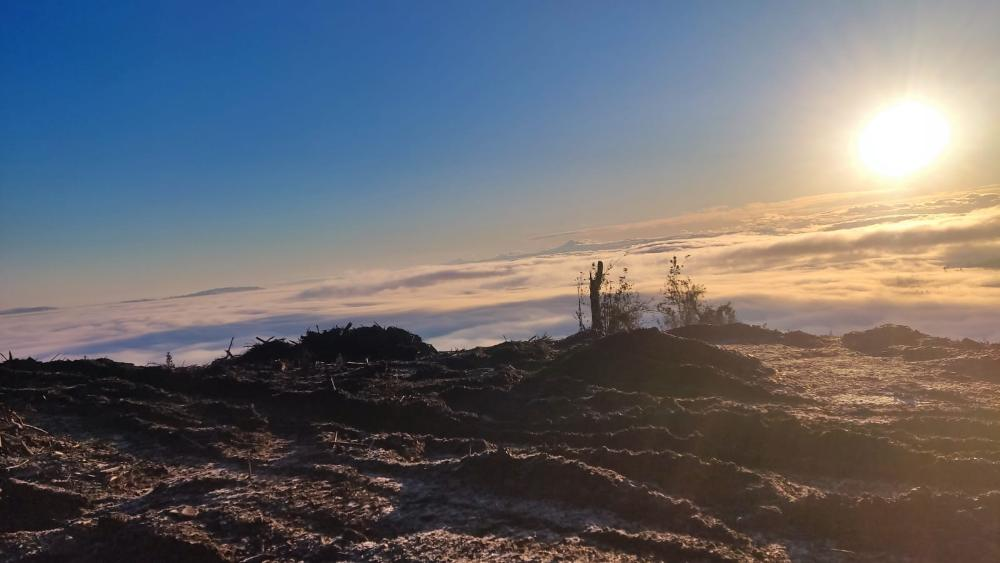

La faena completa
Tomamos el rodal en pie y entregamos trozas despachadas. Siete operaciones, un solo responsable.
-
01
Volteo dirigido
El motosierrista derriba cada árbol orientando su caída hacia la línea de madereo. Corte de dirección, corte de caída: oficio puro.
-
02
Desrame
Se limpia el fuste de ramas con motosierra, en el mismo punto de volteo o en cancha según el sistema.
-
03
Madereo
Los fustes suben a la cancha por el cable de la torre. En terreno plano o moderado, los mueve el Bell o la excavadora.
-
04
Trozado
Trozas a los largos de la pauta del mandante: pulpable de 2,44 m, aserrable según pedido. Una troza mal cortada pierde valor; por eso se corta bien.
-
05
Clasificación
Separación por producto, diámetro y largo. El Bell hace aquí su mejor trabajo: canchas chicas, radio de giro corto.
-
06
Acopio y carguío
Rumas ordenadas y camiones cargados con la garra de la excavadora. Una cancha ordenada es una faena segura.
-
07
Despacho
Salida controlada con guía de despacho electrónica: cada troza acredita su origen desde el rodal hasta la romana.
-
EN PENDIENTE >30%, TORRE.
EN PLANO, BELL Y EXCAVADORA.

Donde las máquinas no llegan, llega el cable.
Sobre 30% de pendiente, un skidder ya no debe entrar: compacta el suelo, erosiona la ladera y expone a la gente. La torre se instala arriba, en la cancha, se afianza con vientos, y tiende un cable por el que los fustes suben suspendidos o semisuspendidos. Ninguna máquina pisa la ladera.
Abajo trabaja el estrobero — el oficio más duro de la faena — enganchando cada fuste al carro. Línea por línea, claro por claro, el bosque de la ladera se convierte en rumas en la cancha. Menor daño al suelo, cursos de agua protegidos y madera donde otros no pueden cosechar.
- LARGO PULPABLE
- 2,44 M
- ROTACIÓN DEL PINO
- 22–28 AÑOS
- PENDIENTE DE TORRE
- >30 %
Parque de maquinaria
-
Torre de madereo
- SISTEMA
- CABLE AÉREO — SKYLINE Y CARRO
- FUNCIÓN
- EXTRACCIÓN EN PENDIENTE >30%
- ANCLAJE
- VIENTOS A TOCONES O MUERTOS
- CUADRILLA
- ESTROBEROS · OPERADOR · DESESTROBADOR

FIG. 03 — LA TORRE EN LÍNEA, CABLES TENDIDOS AL VALLE. -
Excavadora Doosan DX225LC-A
- CLASE
- 22 TONELADAS
- IMPLEMENTO
- GARRA FORESTAL, ROTACIÓN 360°
- ROLES
- MADEREO POR PALEO (SHOVEL LOGGING) · CANCHA · CARGUÍO
- APOYO
- CONSTRUCCIÓN DE CANCHAS Y ACCESOS

FIG. 04 — LA DOOSAN EN CANCHA, A ÚLTIMA LUZ. -
Trineumático Bell
- TIPO
- LOGGER DE 3 RUEDAS
- FUERTE
- CLASIFICACIÓN Y ACOPIO EN CANCHA
- MADEREO
- TERRENO PLANO A MODERADO — RALEOS Y TALA RASA
- VENTAJA
- RADIO DE GIRO CORTO — DOS FRENTES A LA VEZ
FIG. 05 — [FOTO DEL BELL PENDIENTE] -
Cuadrilla de motosierristas
- OFICIO
- VOLTEO DIRIGIDO · DESRAME · TROZADO
- EPP
- CASCO · FACIAL · AUDITIVA · PANTALÓN ANTICORTE
- MÉTODO
- CORTE DE DIRECCIÓN + CORTE DE CAÍDA
- TERRENO
- DONDE NINGUNA MÁQUINA REEMPLAZA EL OFICIO

FIG. 06 — TROZADO A PAUTA: CADA TROZA MEDIDA Y MARCADA.
El pliego de la faena
Seis láminas del trabajo en terreno, tal como se ve desde la cancha: la faja, las rumas, el carguío — y los amaneceres que se ganan llegando primero.
-

Apertura de faja y accesosA-01
-

Cancha y rumasA-02
-

Volteo en laderaA-03
-

Carguío y despachoA-04
-

La cancha sobre la nieblaA-05
-

Amanecer en faenaA-06
Bitácora de familia
Esto no es una corporación con gerencias: es una familia que vive de la faena y responde con su nombre. La bitácora se está pasando a limpio; las entradas llegan con las fotos.
Trato directo con los dueños. Cuadrillas estables de la zona. Decisiones en el día, no en un directorio.
La cuadrilla vuelve a casa.
Es la única meta de producción que no se negocia. Todo lo demás de este folio existe para cumplirla.
-
EPP completo en toda la cuadrilla: casco, protección facial y auditiva, pantalón anticorte.
-
Procedimientos de trabajo seguro por oficio: volteo, desrame, trozado, madereo.
-
Charla diaria de seguridad antes de comenzar cada jornada.
-
Ley 16.744 y mutualidad al día para cada trabajador.
-
Listos para los reglamentos de empresas contratistas de los mandantes: acreditación documental al día.
-
Guía de despacho electrónica y trazabilidad de la madera desde el origen.
-
Operamos bajo los estándares FSC y CERTFOR/PEFC que exigen las principales forestales del país.
En terreno eso también significa cursos de agua con su zona de protección respetada, combustibles y residuos manejados como corresponde todo el año, y prevención de incendios reforzada en temporada. No es un anexo del contrato: es la forma en que se trabaja cuando se vive donde se cosecha.